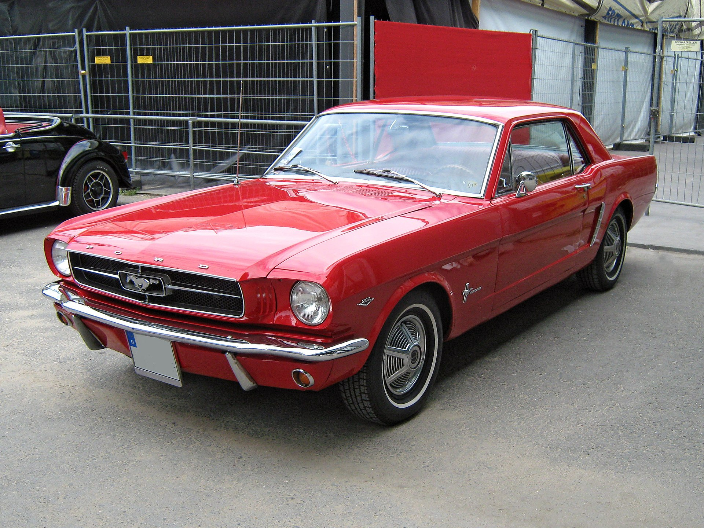

Ford Mustang (1965)
Jeden z najbardziej rozpoznawalnych muscle carów w historii. Łączy potężny silnik z niepowtarzalnym designem amerykańskiej motoryzacji lat 60.
Dziś jest symbolem wolności i stylu, a dobrze zachowane egzemplarze osiągają zawrotne ceny.
